Intro
AuraRAW is a premium manual camera app designed for photographers, filmmakers, and creators who need full control beyond standard camera apps. Built on the Camera2 API, it delivers precise manual controls, RAW capture, and professional monitoring tools in a clean, cinematic interface.
Interface Preview
A closer look at AuraRAW’s professional interface — designed for precision, speed, and cinematic control.
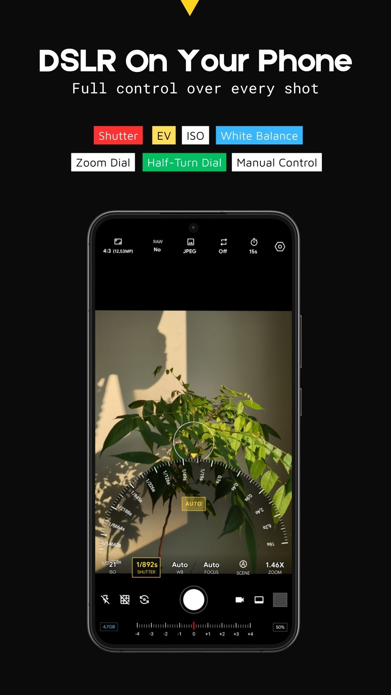
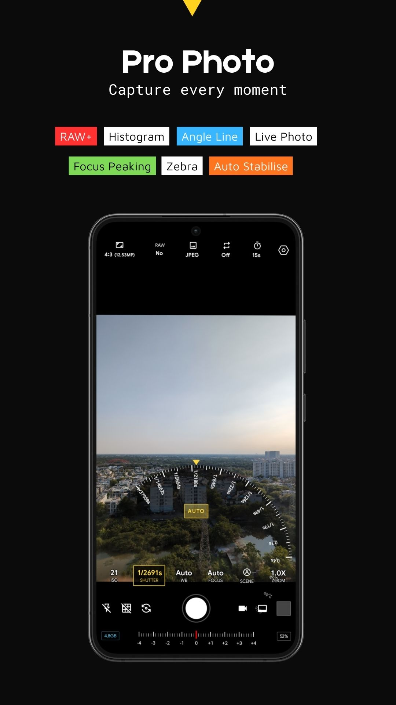
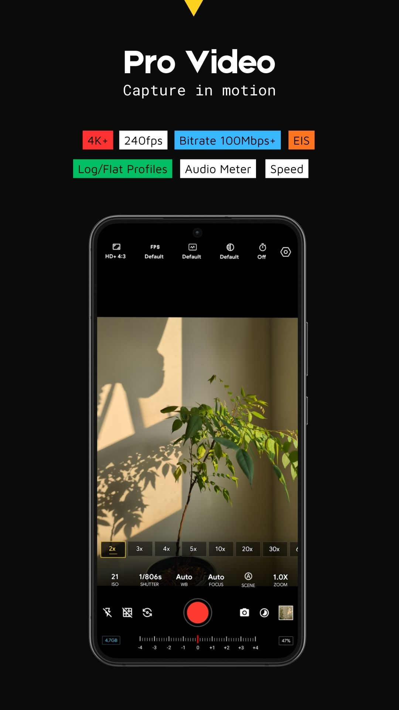
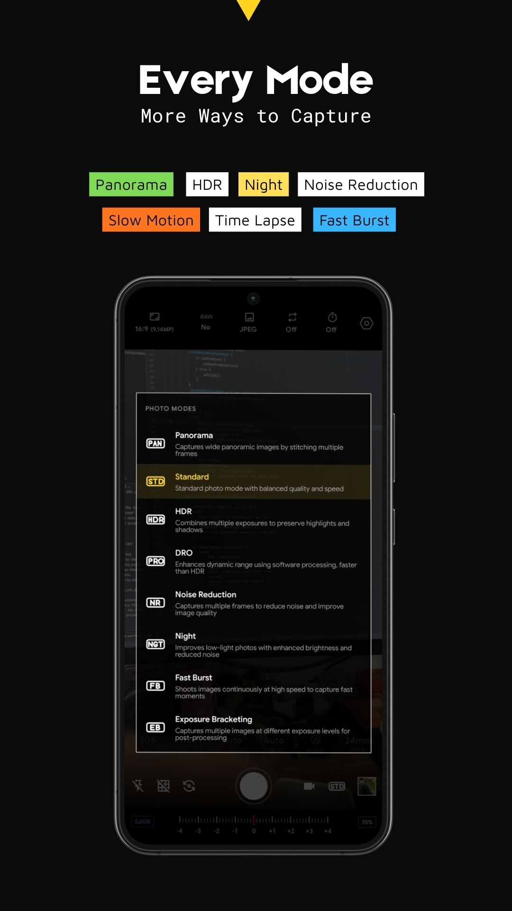
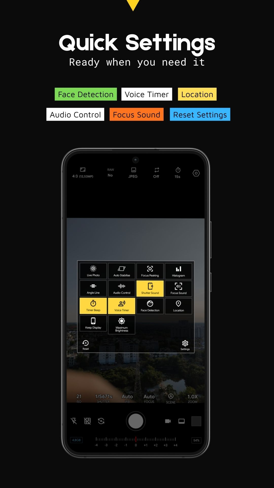
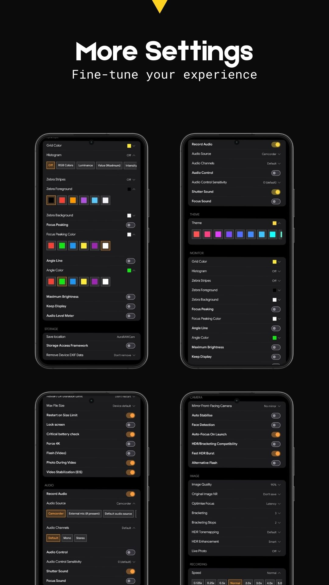
Top Bar (Photo Mode)
The Top Bar dynamically adapts to your current shooting mode, providing specialized controls for both photography and cinematography.
1. Image Quality & Format Settings
This section allows for granular control over the output of your files:
- Resolution (RES): Choose between various aspect ratios and resolutions, including 4:3 (12.53MP, 12.19MP, 12MP) and 16:9 (9.14MP, 8.29MP), with exact pixel dimensions displayed (e.g., 4080x3072).
- RAW Capture: Capture uncompressed data for professional post-processing. Options include Standard/DNG or pure DNG formats.
- File Format: High flexibility with support for JPEG, HDR JPEG (optimized dynamic range), WebP (efficient web compression), and PNG (lossless).
- Continuous Shooting (Burst): Adjust the burst rate from Off up to 2x, 3x, 4x, 5x, 10x, or 20x shots.
- Timer: Set a countdown for hands-free shooting with intervals of 1s, 2s, 3s, 5s, 10s, 15s, 20s, 30s, 1m, 2m, 5m.
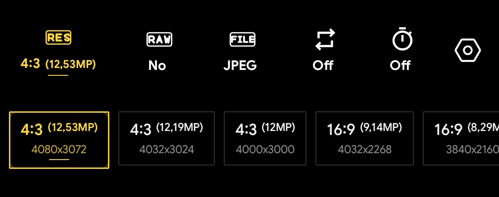
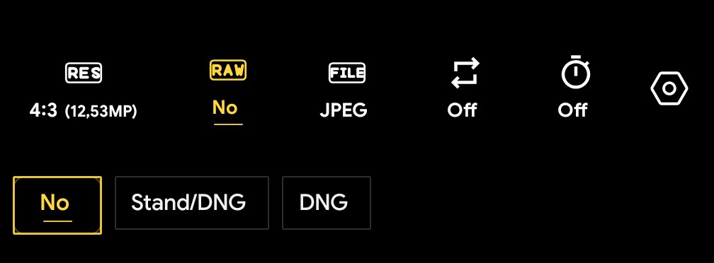
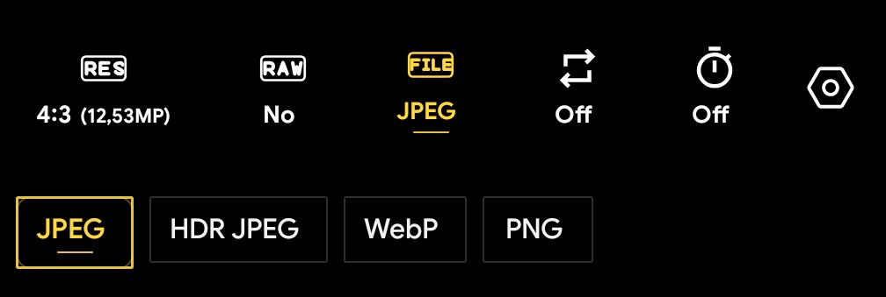
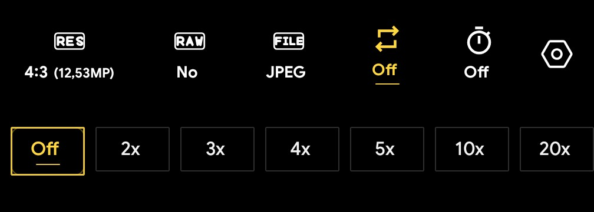
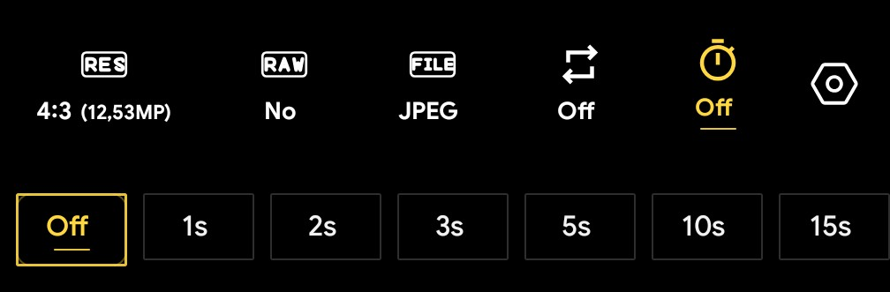
2. Quick Settings & Assistive Tools (Dialog)
The hexagonal icon opens a comprehensive panel of technical assistants and utility features
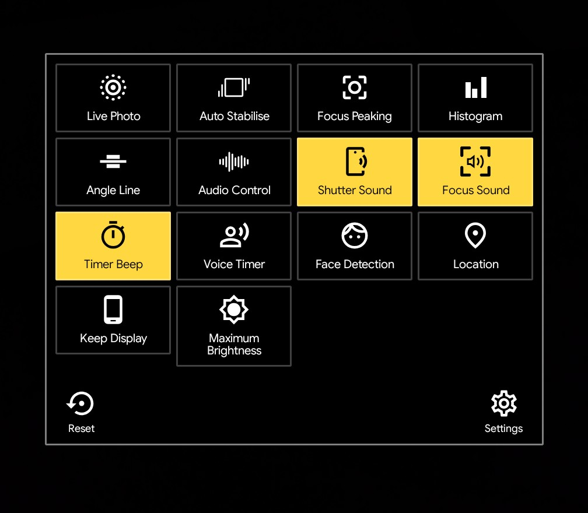
Technical Assistive Tools
- Auto Stabilise: Automatically levels the frame to prevent tilted photos.
- Focus Peaking: A manual focus aid that highlights sharp edges within the frame.
- Histogram: Displays real-time light distribution to ensure precise exposure control.
- Angle Line: A built-in leveler to help you perfectly align the horizon.
- Face Detection: Automatically detects faces to optimize focus and exposure.
Experience & Utilities
- Live Photo: Records a brief moment of movement alongside your still image.
- Audio & Sound: Customize your experience with toggles for Shutter Sound, Focus Sound, Timer Beep, and Voice Timer.
- Audio Control: Advanced options for managing audio input during video recording.
- Display: Includes Keep Display (prevents the screen from dimming) and Maximum Brightness (instantly boosts screen visibility for outdoor use).
- Location: Enable geotagging to save location data into your photo's metadata.
System Management
- Reset: Instantly restore all settings to their default values.
- Settings: Access deeper system-level configuration menus.
Top Bar (Video Mode)
The Top Bar dynamically adapts to your current shooting mode, providing specialized controls for both photography and cinematography.
Video Quality & Format Settings
This section provides granular control over the technical specifications of your video files:
- Resolution (RES): Support for high-end cinematic resolutions including 4K UHD (3840x2160), 4K Ultra Wide (4000x2000), 3.2K Pro, 2K Pro 4:3, and 2.7K.
- Frame Rate (FPS): Offers a wide range of frame rates from standard to high-speed, including 60 FPS, 96 FPS, 100 FPS, and specialized 120 FPS (HS) or 240 FPS (HS) for ultra-smooth slow motion.
- Bitrate (BIT): Manage data rates to balance file size and image quality with options like 80Mbps, 90Mbps, 100Mbps, 150Mbps, and up to 200Mbps.
- Log Profile (LOG): Capture footage with a flat profile for professional color grading. Profiles include REC709, sRGB, Fine, Low, Medium, High, Strong, Extra Strong, Gamma, JTVideo, JTLog, JTLog2.
- Timer: Sets a countdown before recording starts to ensure a stable frame.
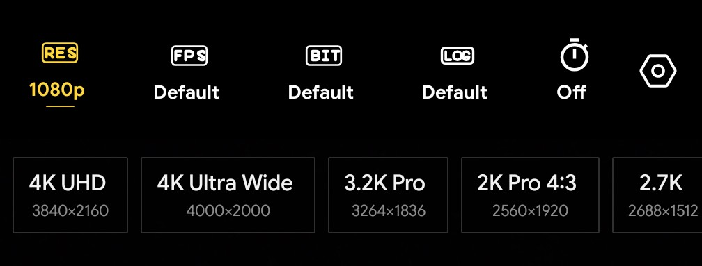
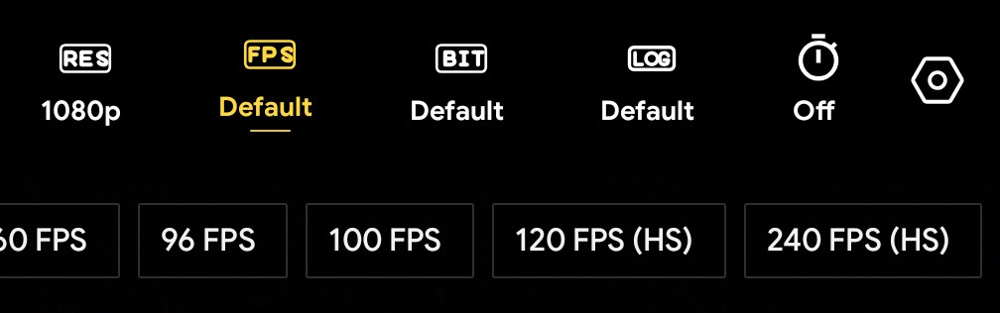
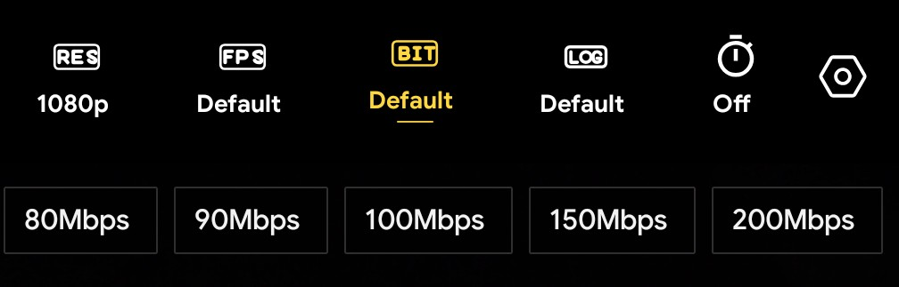
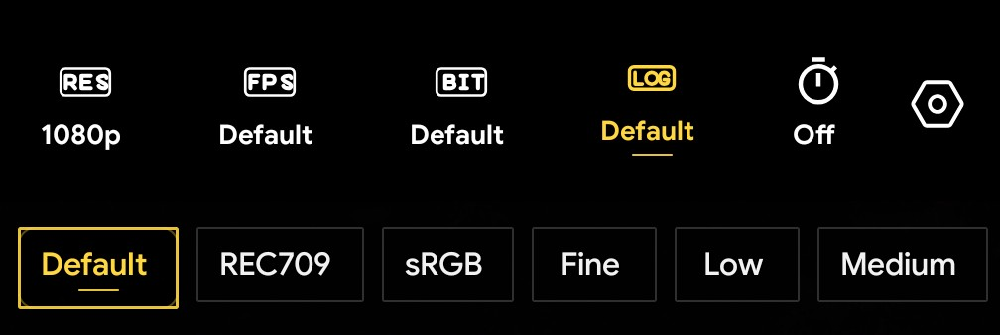
2. Video Quick Settings Menu (Dialog)
The hexagonal icon provides access to essential filming assistants and audio tools
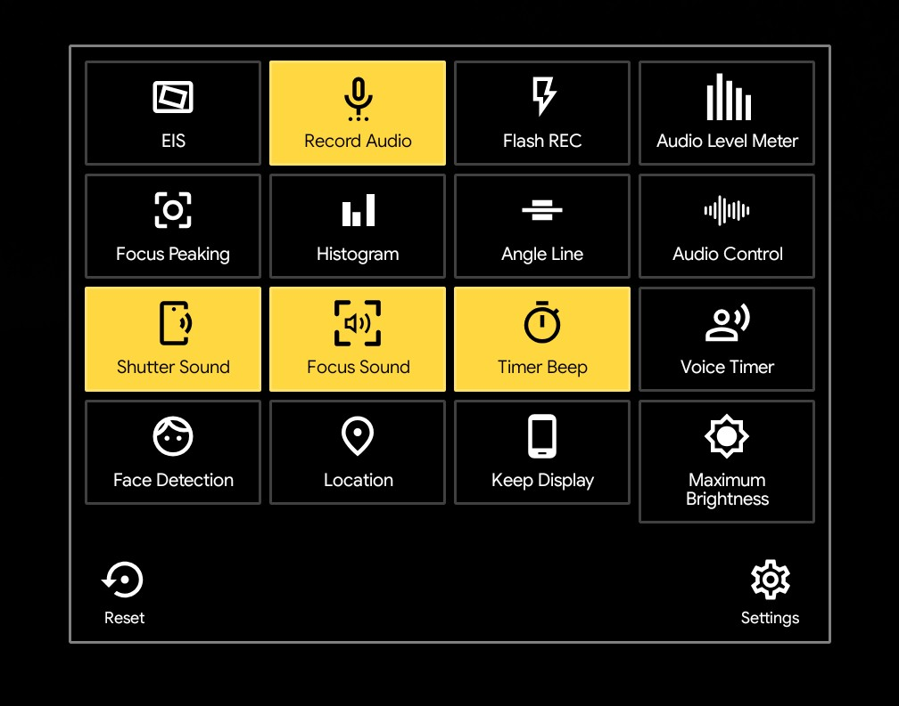
Technical & Visual Tools
- EIS (Electronic Image Stabilization) Enhances stability for smoother handheld footage.
- Flash REC: Toggles the flash for continuous illumination during recording.
- Focus Peaking & Histogram: Critical aids for ensuring sharp focus and monitoring real-time light distribution.
- Angle Line & Face Detection: Helps maintain a level horizon and ensures subjects remain in focus automatically.
Advanced Audio Control
- Record Audio: Quickly toggle sound recording on or off.
- Audio Level Meter: A visual indicator to monitor input volume in real-time, preventing clipping or audio distortion.
- Audio Control: Access deeper settings for microphone sources and noise filters.
System Utilities
- Keep Display & Maximum Brightness: Keeps the screen active and at peak brightness for better visibility in outdoor conditions.
- Location: Embeds GPS metadata into the video file.
- Reset & Settings: Restore default video settings or enter the main configuration menu.
Bottom Bar
The Bottom Bar combines tactile manual controls, real-time parameter monitoring, rapid-access shooting tools, and live exposure feedback into a layered professional interface.
1. Manual Control Dials
The most prominent feature is the semi-circular dials that allow for intuitive, tactile parameter adjustments:
- White Balance (WB): Adjust color temperature from 1000K to 15000K. It includes quick presets such as Auto (A), Manual (M), Tungsten, Fluorescent, Daylight, Cloudy, Shade, and more.
- Shutter Speed: Fine-tune the shutter speed across an extensive range, from ultra-fast (1/37958s) for freezing motion to long exposures (16s). A dedicated AUTO button is available for instant light calculation.
- Zoom/Focal Length: Seamlessly switch between industry-standard focal lengths like 12mm, 16mm, 24mm, 35mm, 50mm, 85mm, and 135mm. The top dial allows for precise incremental adjustments (e.g., 18mm, 20mm, 28mm).
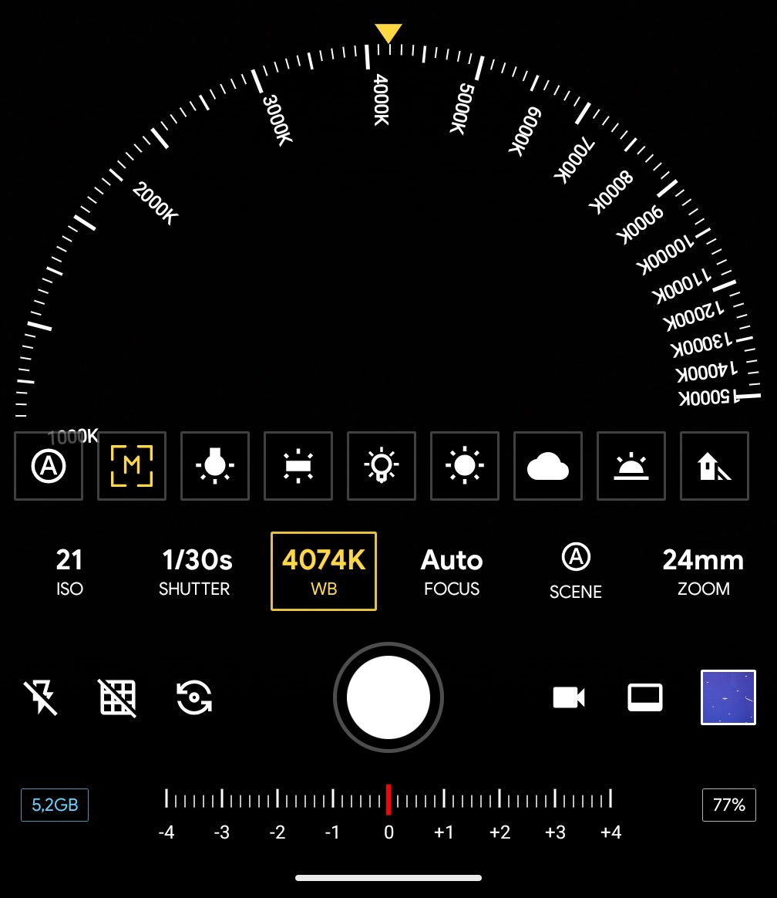
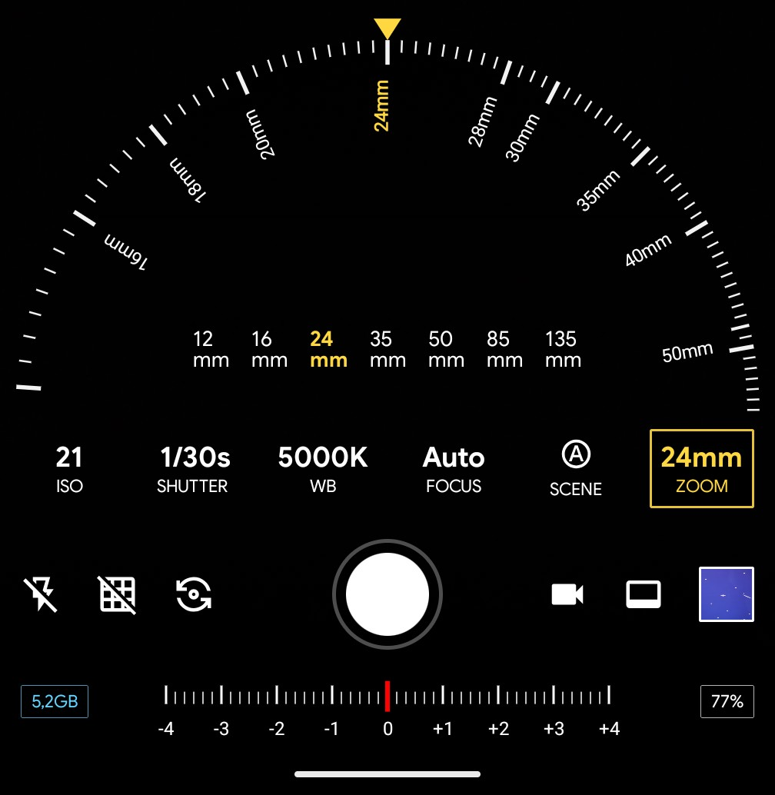
2. Parameter Status Bar
Located directly below the dials, this row displays the real-time values of six core settings:
- ISO: Displays light sensitivity (AUTO, 21-32000).
- SHUTTER: Current shutter speed (AUTO, value from 1/37958s to 16s).
- WB: Color temperature (AUTO, value from 4074K or 5000K).
- FOCUS: Focus mode (AUTO, value from Macro to Infinite).
- SCENE: Scene mode (Auto, Night, Portrait, Action, Barcode, Beach, Candlelight, Fireworks, Landscape, Night-Portrait, Party, Snow, Sports, Steady Photo, Sunset, Theatre).
- ZOOM: Focal length (12-700mm).
Note: Features and manual controls are subject to device hardware support.
3. Quick-Access Function Toolbar
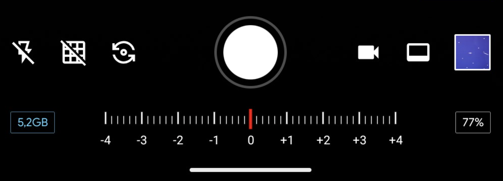
This layer provides rapid toggles for essential shooting tools:
- Flash: Toggle between On, Off, Auto flash or Torch.
- Grid: Enable/disable composition grids (e.g., Rule of Thirds).
- Camera Switch: Quickly flip between front and rear cameras.
- Shutter Button: A prominent central button for capturing photos or starting a recording.
- Mode Switch: Toggle between Photo and Video modes.
- Aspect Ratio: Change the frame dimensions (e.g., 16:9, 4:3, etc.).
- Gallery: A preview thumbnail on the far right to view recently captured media.
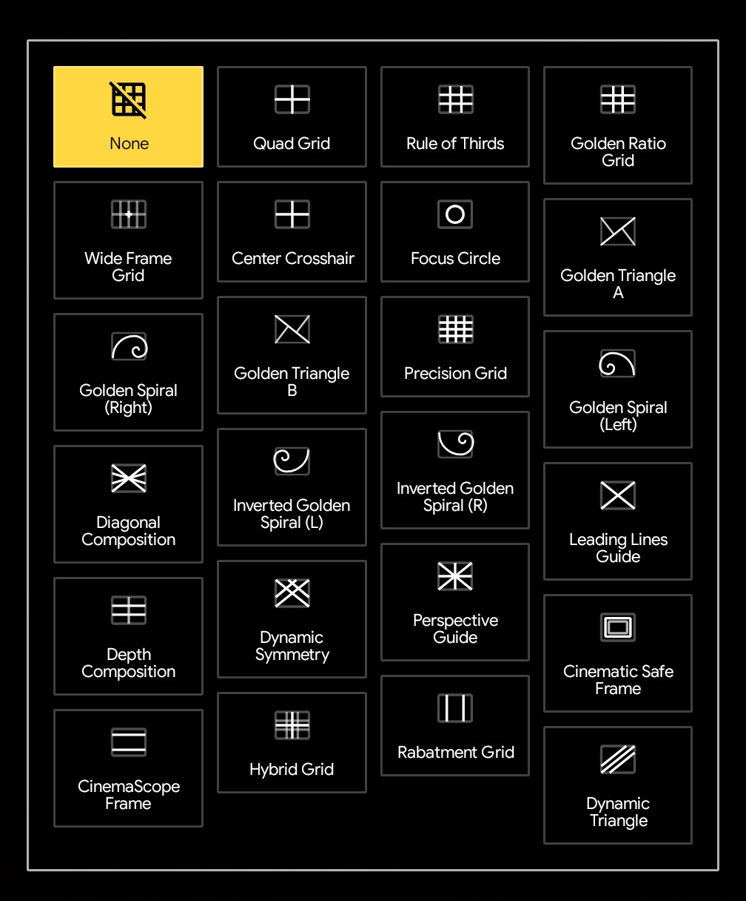
4. Exposure & System Information (Bottom Layer)
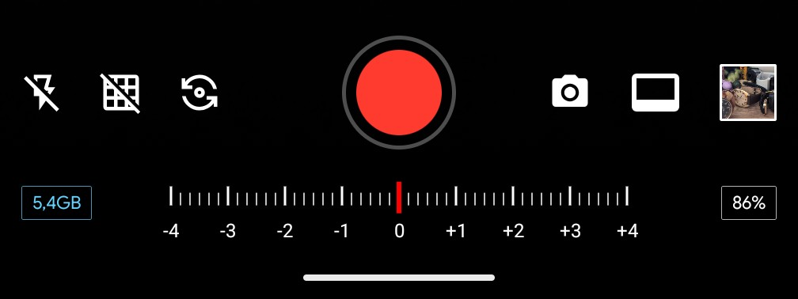
The base of the interface displays critical system data and exposure feedback:
- Exposure Compensation (EV): A horizontal slider ranging from -4 to +4 with a red indicator at zero, allowing for manual brightness bias.
- Storage Info: Shows remaining disk space (e.g., 5.2GB).
- Battery: Displays the current battery percentage (77%).
Settings
Granular control at your fingertips. From codec selection to UI customization, AuraRAW's settings menu is built for professionals who demand full control over their hardware.
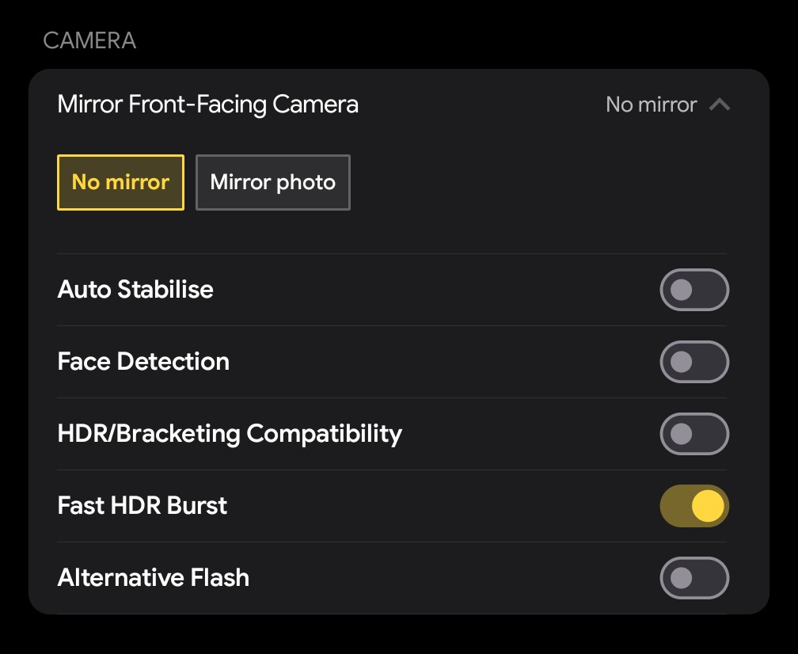
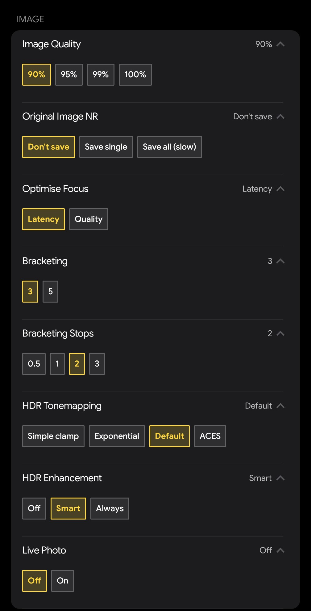
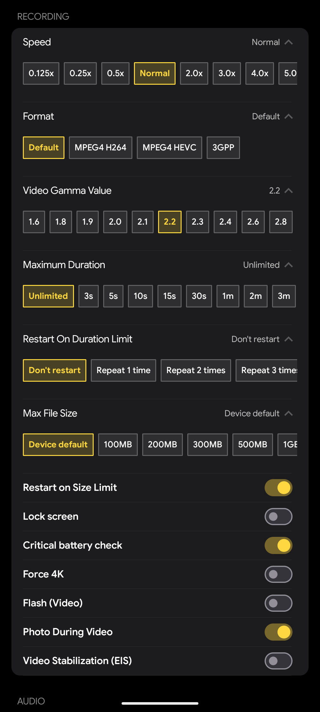
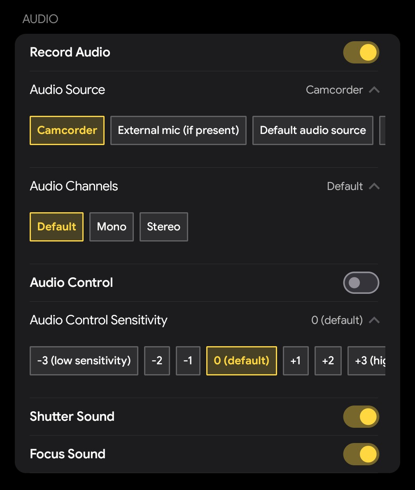
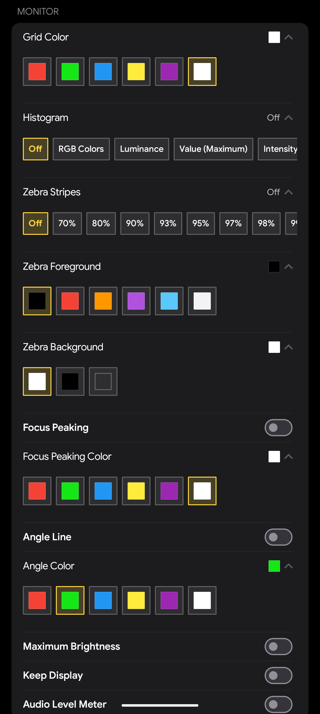
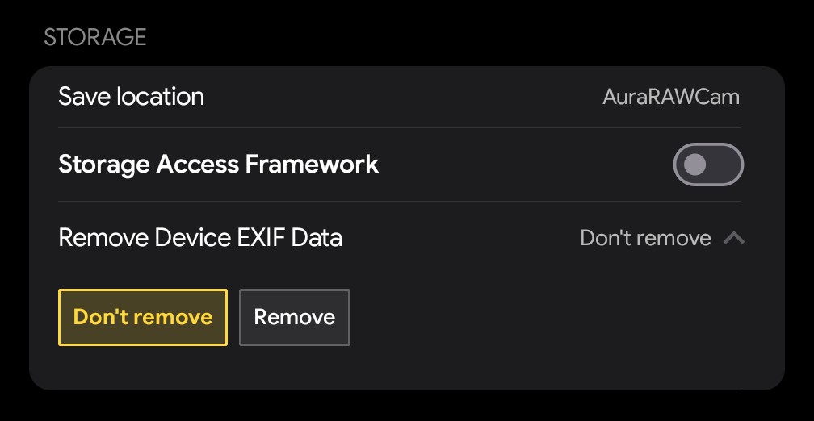
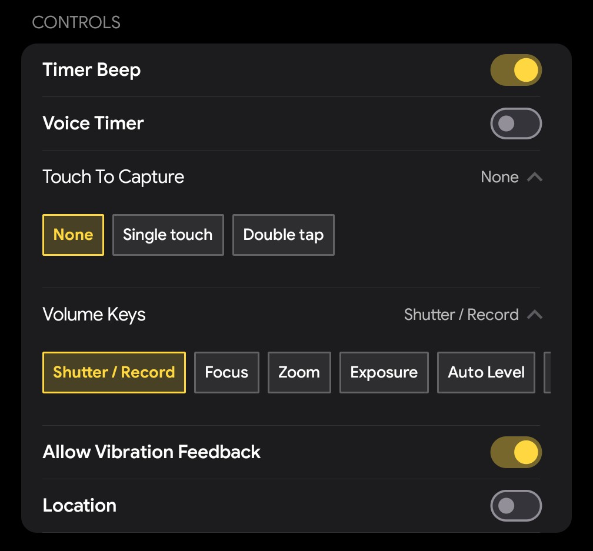
Frequently Asked Questions
How do I adjust shooting parameters like ISO or Shutter Speed? +
What does the horizontal bar at the bottom represent? +
Can I see my remaining battery and storage space? +
Does the app support RAW photography? +
What image formats can I save in? +
How do I use the Burst mode? +
What is the maximum video resolution supported? +
Can I record high-speed slow-motion video? +
What are "Log" profiles? +
What is "Focus Peaking"? +
How do I ensure my photos aren't tilted? +
Can I monitor audio levels during video recording? +
How does the Histogram help me? +
How does the Auto Stabilise feature work? +
What is the benefit of Face Detection in professional photography? +
How can I tell if I have focused correctly when using manual focus? +
Can I turn on the light while recording video? +
Can operation sounds be turned off? +
Does the Keep Display feature drain the battery? +
If you have any other questions or require assistance, we’d be glad to help. Please send an email to ssolstice216@gmail.com